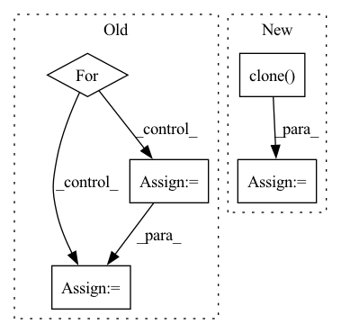

Pattern ID :11736
Before Change
for epoch in range(self.poison_iteration):
optimizer.zero_grad()
l2_loss = 0.0
for ind in self.ynt_sub_inds:
ynt_img = self.ynt_imgs[ind].cuda()
ynt_img = ynt_img * (1-self.mask) + self.mask * torch.sigmoid(self.mark)
ynt_img = ynt_img.unsqueeze(0)
ynt_featmap = self.model.get_fm_before_outlayer(ynt_img)
l2_loss += criterion(ynt_featmap, yt_avg_featmap)
l2_loss = torch.div(l2_loss, len(self.ynt_sub_inds))
print("Epoch {} | MSE Loss {}".format(epoch, l2_loss))After Change
ynt_img = self.ynt_imgs[self.ynt_sub_inds].cuda()
ynt_img = ynt_img * (1-self.mask) + self.mask * torch.sigmoid(self.mark)
ynt_featmap = self.model.get_fm_before_outlayer(ynt_img)
l2_loss = criterion(ynt_featmap, yt_avg_featmap.clone() .detach())
print("Epoch {} | MSE Loss {}".format(epoch, l2_loss))
l2_loss.backward()In pattern: SUPERPATTERN
Frequency: 3
Non-data size: 5
Instances Fragment ID: 39555867
Project Name: ain-soph/trojanzoo
Commit Name: ab9477e1b0e41c6abe9e11d7345b20233d61b9d9
Time: 2020-07-01
Author: zxx5113@lrs-twang01.ist.psu.edu
File Name: trojanzoo/attack/backdoor/latent_backdoor.py
M Class Name: Latent_Backdoor
N Class Name: Latent_Backdoor
M Method Name: generate_trigger(1)
N Method Name: generate_trigger(1)
M Parent Class: BadNet
N Parent Class: BadNet
M File Name: trojanzoo/attack/backdoor/latent_backdoor.py
N File Name: trojanzoo/attack/backdoor/latent_backdoor.py
M Start Line: 183
M End Line: 256
N Start Line: 138
N End Line: 204
Before Change
for epoch in range(self.poison_iteration):
optimizer.zero_grad()
l2_loss = 0.0
for ind in self.ynt_sub_inds:
ynt_img = self.ynt_imgs[ind].cuda()
ynt_img = ynt_img * (1-self.mask) + self.mask * torch.sigmoid(self.mark)
ynt_img = ynt_img.unsqueeze(0)
ynt_featmap = self.model.get_fm_before_outlayer(ynt_img)
l2_loss += criterion(ynt_featmap, yt_avg_featmap)
After Change
ynt_img = self.ynt_imgs[self.ynt_sub_inds].cuda()
ynt_img = ynt_img * (1-self.mask) + self.mask * torch.sigmoid(self.mark)
ynt_featmap = self.model.get_fm_before_outlayer(ynt_img)
l2_loss = criterion(ynt_featmap, yt_avg_featmap.clone() .detach())
print("Epoch {} | MSE Loss {}".format(epoch, l2_loss))
l2_loss.backward() Fragment ID: 39555899
Project Name: ain-soph/trojanzoo
Commit Name: ab9477e1b0e41c6abe9e11d7345b20233d61b9d9
Time: 2020-07-01
Author: zxx5113@lrs-twang01.ist.psu.edu
File Name: trojanzoo/attack/backdoor/latent_backdoor.py
M Class Name: Latent_Backdoor
N Class Name: Latent_Backdoor
M Method Name: generate_trigger(1)
N Method Name: generate_trigger(1)
M Parent Class: BadNet
N Parent Class: BadNet
M File Name: trojanzoo/attack/backdoor/latent_backdoor.py
N File Name: trojanzoo/attack/backdoor/latent_backdoor.py
M Start Line: 183
M End Line: 256
N Start Line: 138
N End Line: 204
Before Change
mrr, hits = [], []
for i , (s, p, o) in enumerate(test_spo):
row = scores[i] // corresponding predictions
idx = o if direction == "o" else s
true_score = row[idx]
// remove current label from scores
row = row.clone()
row[idx] = float("-Inf")
// follow LibKGE protocol for ranking and tiesAfter Change
true_scores = scores[arange, targets].view(-1, 1)
// remove the true subjects/objects from the scores so they don"t factor in rankings
scores = scores.clone()
scores[arange, targets] = float("-Inf")
// follow LibKGE protocol by taking the mean rank among all entities with same score
ranks = torch.sum(scores > true_scores, dim=1, dtype=torch.double) Fragment ID: 39555897
Project Name: tsafavi/codex
Commit Name: 3dddca246e4fb616cef251bafb32dac648e8eedb
Time: 2020-07-08
Author: tsafavi@umich.edu
File Name: scripts/baseline.py
M Class Name: AnonimousClass
N Class Name: AnonimousClass
M Method Name: evaluate_rankings(5)
N Method Name: evaluate_rankings(5)
M Parent Class:
N Parent Class:
M File Name: scripts/baseline.py
N File Name: scripts/baseline.py
M Start Line: 129
M End Line: 151
N Start Line: 129
N End Line: 148
Before Change
if num > 1:
pieces = []
for i in range(1, num + 1):
start = piece_length * (i - 1)
end = piece_length * i
piece = spec[:, start:end]
if i == num:
piece = spec[:, start:]
freq(piece)
time(piece)After Change
def augment(in_spec, chunk_size=30, freq_mask_param=10, time_mask_param=6):
spec = torch.clone( in_spec)
freq_mask = torchaudio.transforms.FrequencyMasking(freq_mask_param=freq_mask_param, iid_masks=True)
time_mask = torchaudio.transforms.TimeMasking(time_mask_param=time_mask_param, iid_masks=True)
Fragment ID: 39555922
Project Name: ivankunyankin/quartznet-asr
Commit Name: 28f999e7cfbefb66c9545f32e76a7454a7432aac
Time: 2021-07-01
Author: IKunyankin@gmail.com
File Name: utils.py
M Class Name: AnonimousClass
N Class Name: AnonimousClass
M Method Name: augment(4)
N Method Name: augment(4)
M Parent Class:
N Parent Class:
M File Name: utils.py
N File Name: utils.py
M Start Line: 57
M End Line: 82
N Start Line: 57
N End Line: 74